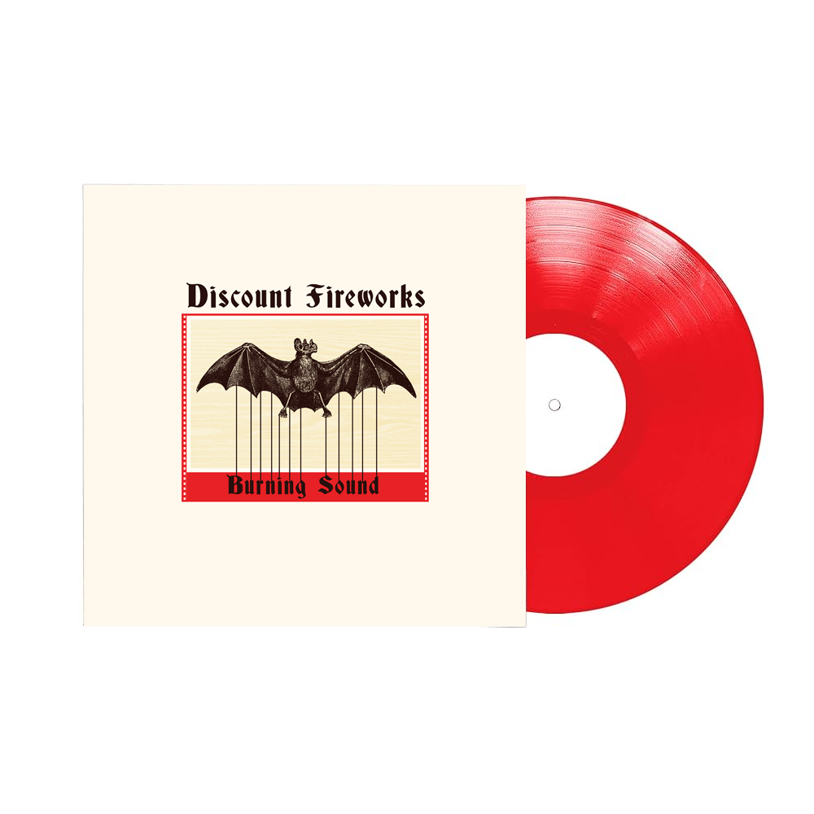

We couldn’t be more excited about this effort. It kicks off with the blistering single and title track, "Burning Sound." From there, "Only" effortlessly traverses time signatures, layered with sax and trombone, while "Lightmare" gets massive with rich cello and a bombastic rhythm section. We sprinkle interstitial pieces to bring you along on this adventure. "Almost Home" rounds things out with textural organ, guiding you through oddly jaunty verses and anthemic choruses begging you to “Save the soul of the song!”
It’s a dynamic journey that we can't wait to get out into the world.
The Packaging: Hand-Crafted & Collectible - The music makes a statement, and the physical presentation will too.
The Vinyl: 10” red vinyl.
The Cover: Designed and letterpressed by Jeff Mueller (Dexterity Letterpress). Jeff has created iconic letterpress work for bands like Shellac, Yo La Tengo, Palace, Bardo Pond, Savak, and others; alongside his own legendary projects (Rodan, June of 44, Shipping News).
The Detail: Each heavy-stock 10" jacket will be individually letterpressed, featuring our logo literally burned into the back cover with an actual branding iron.
This won't just be a record; it will be a beautifully crafted, limited-edition art piece.
We’d love to have you in our corner for this release. Let us know if you're interested in partnering up on the vinyl pressing or any other aspects (cassettes, CD, digital, psychic), or if you want to hop on a call to chat about ideas.
Joe Sepi & Discount Fireworks
joe@joesepi.com | +1 (917) 969-0338
Instagram
Done: First single - Burning Sound
Ready/soon: Release second single - Lightmare
In production: Release video for Lightmare
Ready: Release full digital album
TBD: Announce vinyl pre-orders
TBD: Announce vinyl availability
Other media formats may be a part of this plan at some point as well
Joe Sepi - guitar + vocals
Jeff Maleri - bass + vocals
Ben Myers - drums + vocals
Karyn Watts - cello
Vinny Nobile - trumpet, vocals
Richard Brown - saxophone, guitar
Scott Amore - organ
Stella Vlad - strega stellanonna
Engineered and recorded by Ben Myers and Joe Sepi at The Illuminated Loft except Burning Out recorded at Ben’s house.
Travis Harrison mixed Lightmare, Only, Almost Home
Matt Labozza mixed Burning Sound
Mastered by Carl Saff
Cover art and letterpress by Jeff Mueller
Thank you. Please come again.
💥 🤘 💥